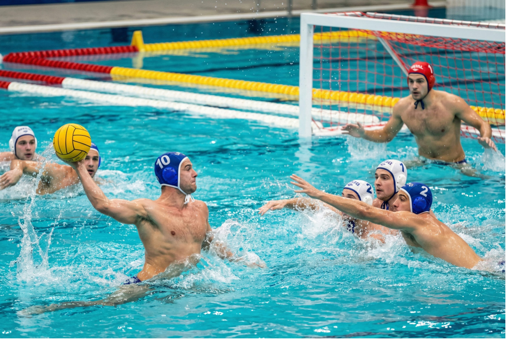

Главная
Правила
Команды
Галерея
Интерактив
📜 Правила водного поло
Водное поло - это контактный вид спорта с чёткими правилами, которые обеспечивают честную и динамичную игру.
📌 Основные правила
- Игроки не должны касаться дна бассейна
- Мяч можно держать только одной рукой
- Матч состоит из 4 периодов
- Цель игры - забросить мяч в ворота соперника
⚠️ Нарушения
- Толчки и грубая игра
- Задержка соперника
- Удержание мяча слишком долго
⏱ Как проходит матч
Каждая команда старается контролировать мяч и создавать атакующие ситуации.
Игра требует постоянного движения, поэтому игроки должны быть в отличной физической форме.

🌍 Подробнее
Полные правила можно изучить
здесь.